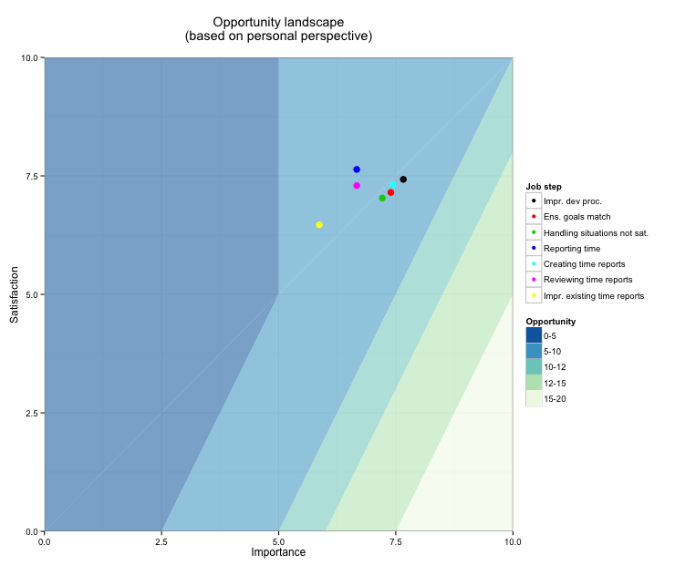
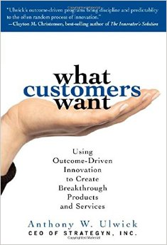

Understanding, pricing and releasing your next web-based product/service
by Fredrik Wollsén
@neamlabs
About me
- Personality type: ENTP
-
"the ENTP's primary interest in life is understanding the world that they live in"
- PRO: Rational, logical, curious, "uncompromisingly honest"
- CON: Not a hustler, not a sales rep
My life as a geek and consultant
- 1990 - 4 years old - Dad calls me at day-care from work after I the night before had changed password on his work-laptop
- 1995 - 9 years old - First programming language (BASIC)
- 1996 - 10 years old - First personal website (HTML)
- 2001 - 15 years old - Started building dynamic websites (PHP)
- 2002 - 16 years old - First website built for client
- 2004 - 18 years old - Started web/IT consultancy business
- 2005 to 2016 - 19-30 years old - Consulting, Studying, Traveling
"Much experience! Such expert!"
Doge
April 2016
My history as an entrepreneur
- Started six companies, first in 2002
- $850,000 investor money
- Creative, skilled teams
- Covered by TechCrunch, VentureBeat, GigaOM, Fast Company, VatorNews, Business Insider
- Thousands and thousands of hours in product/service development without pay
- Lots of insane work weeks
Great success?
Four companies shut down within 3 years of their initiation
&
One court-case between previous co-founders spanning several years
However, apply math and...
- Two companies are still alive!
Me as an entrepreneur today
- Two companies are still alive
- Happy, paying, returning customers
- No media coverage (Not necessary!)
- Very few insane work weeks
- Can choose freely where and how much to work
- Enough time and money to create new web-based products/services
Part 1 - Starting from scratch
When you have the luxury to start from scratch
DON'T START WITH THE SOLUTION!
Say what?
There ARE tons of methods, tools and advice for startups implying that you should run head-first into the startup world and start building...
Lean Startup, Validation Board, Lean Canvas, Business Model Canvas, SEMPORCES, Hacker/Hustler, KISS, Business Model Yacht, One-Page Lean Startup, "Get Out Of The Building", Scrum, Agile Software Development, Kanban, Retrospectives, Growth Hacking, etc
I'm an entrepreur!
But wait... You tried to actually apply a method in practice?
How did it go?
"Everything assumes that we already have a team, an office, seed money, a plan, a landing page, a pricing model, a clear product roadmap, a sales team ..."
The thing is...
While most advice will help you get through the "Prototype -> Growth -> Maturity" cycle...
Very little advice is generally available for those that have the opportunity to start from scratch
(You!)
Doesn't matter...
Go ahead and start anyway!
BUT NOT WITH AN IDEA!
What?
Seriously
This is going to sound cheesy
But it may just end up saving years of your life
So listen up
Start with clarifying your dreams and inspirations
WRITE THEM DOWN
Let your family, friends, potential co-founders etc read them
Dreams: What kind of entrepreneurship are you looking for?
Venture-backed startup
VS
Supporting yourself and your family
Venture-backed startup life
- Work ~70 hours a week with a low salary and high pressure for years
- Meet new people, move to new places
- Receive a miniscule chance at big-time "success" and fame
- The "startup dream" as projected by media and venture capital firms
VS
Support yourself and your family
- Start small, grow organically
- Prioritize friends and family
- No venture capital
- Needs to spend time strategically
- Moderate chances to become financially independent
- Typically business-to-business
Regarding your inspirations
I have a prediction...
If you are heavily inspired by the stories of famous entrepreneurs...
...you will almost certainly fail as an entrepreneur
You will have gained lots of experience and learned a lot in the process, but you WILL fail
Advice
See if you can find inspiration in the the hundreds of thousands entrepreneurs world-wide that only are successful but not famous
- Get in contact with groups and networks for entrepreneurs
- Join one of their events and/or go talk to them
- They don't bite
Part 2 - Understanding your next product/service
Again, hold your horses and wait with the idea/solution
The traditional innovation process

- Begins with the idea/solution
- Extremely high failure rates
- Expensive as *****
A smarter approach

- Begins with researching, talking to and getting to know the kind of customers that align with your dreams and inspirations
- THEN start a business that offers value to those customers
It is tempting to believe that you already know what customers want, and that your idea is good enough to try out in the real world
Look at it this way...
Let's assume that most Silicon Valley based startups, their investors, advisors, mentors etc are actually not completely clueless
Let's assume that they are actually smart, creative people with lots of experience (Thousands of startups)...
Let's assume that they most often start with building a beta version (Veeeery common)...
But still:
The overwhelming majority of these startups will fail
Also, there is a huge difference in efforts, for practically the same learning
- Start with building a beta version: 100-400 hours of unpaid work + $1000-25000 investment necessary
- vs
- Start with customer-needs and market research: 10-100 hours of unpaid work + $100-1000 investment necessary
Ergo...
Make sure the idea is revised, improved and has a clearly defined market before actually being built
"But lots of smart people like my idea and are telling me to just go for it!"
Be patient!
- Most often, advisors, incubators and investors will tell you to "go for it" or "get out of the building" and help you assemble a team even when the idea is premature!
- This may be practical for them, since their goal may be to "stimulate innovation" and fearing that their advisees will give up and look for employment instead, they rather see them trying out their ideas in a startup.
- Even many investors will invest in premature ideas for the fun of it, even when they suspect beforehand that the idea won't fly.
- Result: Extreme costs for you and society in lost opportunities
Premature ideas on the market
Again:
Most startups fail
Got it? Let's continue :)
Who chooses the customer?
-
YOU! At a higher level, YOU get to choose your customers and markets you want to learn about and understand.
-
At the lower level, YOU will strive to only attract the customers that actually get value from your business.
How do we learn about customers and evaluate market segments?
Traditional customer-driven evaluation methods and marketing:
problems, solutions, features, specs, needs, selling points, benefits, advantages, pros, cons, etc
Too many variables!
Traditional customer inputs
"faster," "easy-to-use," "reliable," "smart," "powerful," "durable," "cheaper," and "better"
Far too vague to have any meaningful value to designers and engineers!
"I wish there was a clean, systematic approach to creating breakthrough products/services!"
A CHALLENGER APPEARS
The outcome-driven approach to innovation
A hands-on systematic approach to devising breakthrough products/services
Again?
The outcome-driven approach to innovation
Thinking in the terms of a product's potential to get a job done and address the customer's desired outcomes
Again?
The outcome-driven approach to innovation
Innovation as a predictable process
First things first
Some theory...
Outcome-Driven Innovation
- Understand what customers want
- Innovate a breakthrough product/service
- Communicate about products/services based on what customers want
Outcome-driven thinking revolves around six basic concepts
- Jobs
- Desired outcomes
- Constraints
- Market Importance
- Market Satisfaction
- Market Opportunities = Underserved desired outcomes
Jobs = A Key Factor to Growth
- In both new and established markets, customers (people and companies) have jobs that arise regularly and need to get done
- To get the job done, customers seek out helpful products and services.
- Functional jobs
- Emotional jobs (Personal, Social)
Desired outcomes = Metrics That Drive Innovation
- Customers want to get their jobs done, but they are actually trying to achieve other things than the actual job at hand
- People do not want a half-inch drill, they want a half-inch whole, and they want it done in a certain way
- Desired outcomes define how they want to get the job done and what it means to get the job done perfectly
- Functional desired outcomes
- Emotional desired outcomes (Personal, Social)
Constraints = Roadblocks to Success
- Besides getting more jobs done, or a specific job done better, customers also need help overcoming the constraints that prevent them from getting a job done altogether or under certain circumstances.
- Functional constraints are often physical, regulatory, or environmental in nature.
- Emotional constraints (Personal, Social) are often cultural, moral or ethical in nature.
Market opportunities historically and in the future
- New jobs are created over time, old ones abandoned, but for the most time, jobs are constant over time
- Desired outcomes usually do not vary over time!
- Constraints varies over time with new technologies/regulations opening up for new possible product/service launches!
Not just a handful
- Most customers are mostly unaware of which exact job steps they perform, what desired outcomes they value and what constraints hold them down, and can at most list a handful of them from the top of their mind
- For most jobs, even those that may seem somewhat trivial, there are typically 50 to 150 or more desired outcomes
- YOU have to find these throw careful studying, interviewing and understanding your customer's world
Surveying Importance
- How important are the jobs, outcomes and constraints to customers?
- Defined as what percentage of customers assign the job/outcome/constraint either a 4 or a 5 on a scale to 1-5 in importance.
- Does not vary over time! (Cell phones were just as important 50 years ago as they are now)
Surveying Satisfaction
- How satisfied are they with the degree to which the tools/products/services they use today enables you to get the job done?
- Defined as what percentage of customers assign the job/outcome/constraint either a 4 or a 5 on a scale to 1-5 in satisfaction.
- Varies over time as new products/services arrives to market!
Underserved/Overserved Market Opportunities
- Underserved market opportunities = Important outcomes with unsatisfied customers
- Overserved market opportunities = Customers are more satisfied than necessary (Disruptive innovation necessary!)
The Opportunity Algorithm combines Importance and Satisfaction)
Importance + max (Importance-Satisfaction,0)
= Opportunity
The market segmentation methods helps you discover market segments related to attractive market opportunities
The ODI Landscape for a customer group

The ODI Landscape showing statistically discovered market segmentations

Each segment represents a different type of customer

Read the book!
"What customers want" by Anthony W. Ulwick
Or if you are lazy, start by reading the 12 pages in the theory section from
a(href='http://urn.kb.se/resolve?urn=urn:nbn:se:kth:diva-169581',target='_blank')my Master ThesisThe best part...
It comes with instructions!

- The priorities and steps necessary to choose your product/service
Part 3 - Releasing your next product/service
What to release and when?
This is what you want to release in the first weeks
- Day 1 - Your dreams and inspirations (To family, friends and co-founders)
- Week 1-2 - Your requests to meet up and talk with those in your broader customer type
- Week 4-6 - Your innovation survey (Hint: Buy good relevant survey responses from audience services)
- Week 6-8 - A marketing page which includes a rough first version of your offerings
- Week 9-10 - Marketing efforts/campaigns for validation, learning and price-gauging (Cost-per-click paid advertising may be fine to start with)
Q: What about the actual product/service?
A: First of all, forget about the notion of releasing a "product". It is never done in a vacuum.
You are offering value delivered from your company as a whole, which may include the customer getting access to a product/service but the customer will always gauge the complete value she gets from the relation with your company, not the product in itself.
With that in mind, this is a generalized "Release schedule"
- Whenever your company can offer real value to your single most ideal customer, release to them
- Whenever your company can offer real value to your first ideal customer target segment, release to them
- Whenever your company can offer real value to another highly ideal customer target segment, release to them
- etc
Be creative! Try to release as early and as often as possible!
There is nothing that states that you need to build a product/service to deliver real value
Example 1
Release a whitepaper that outlines the business case for something relevant to your future offering in exchange for feedback or getting them to join a mailing list
Example 2
Release a competition in which one potential customer wins free consultancy hours for advice in how they can improve their business (in general), free installation and integration of an early access prototype, a year of premium support or similar etc
Example 3
Release early access to a tutorial or other documentation which helps the customer and yourselves gauge how well the solution might fit
Don't release without a reason
You want to be looking for the ability to gain critical insights in how well the solution will be aligned with the customer's need in order to prevent mistakes in the design of your solution
If you don't have a plan to follow up on these early releases, you might skip them altogether
Part 4 - Pricing your next product/service
The trickiest part!
In the end, you are always to an individual - a human being
Understand who that individual is, how he thinks and what he eats for breakfast. Seriously
Human beings are NOT RATIONAL
This may be the single most important thing to understand
Read this book!

"Thinking - Fast and slow" by Daniel Kahneman
Value in the eyes of the customer
The human being does not buy a product or service
As mentioned previously, the customer will always gauge the complete value she gets from the relation with your company, not the product in itself
A low price is almost never the most important customer need
The price is only related to one of between 50-100 desired
"How important is it that the price of online tools used in the bookkeeping process is low?"
Customer value equation
bild på wkv här
Take your time grasping the whole picture!
bild på process här
Your competitors are NOT the alternatives
Coming up with an initial price
- Keep it simple
- The 10x rule
Part 5 - Case study
Hemsida24.se - The most popular website builder in Sweden

Today around 15.000 paying customers, paying at least 99 SEK / month
How did they arrive at 99 SEK / month? (Around $11 / month)
Their ideal customer that they chose
... was the members of the model photography community which they ran at the time
They had realized that most of them wanted their own web site
Started by pitching the concept and a price to friends, family, colleagues and journalists they thought was right
500-600 SEK per year
Feedback from a journalist
It is too low!
So they chose to think about a new official list price, and try it out by offering limited in time and introductionary discounts
- First month: 495 SEK per year (Ordinary price 1495 SEK per year)
- Second month: 695 SEK per year (Ordinary price 1495 SEK per year)
- Third month: 995 SEK per year (Ordinary price 1495 SEK per year)
- Fourth month: 1295 SEK per year (Ordinary price 1495 SEK per year)
- Started to notice pushback
- Fifth month: 1395 SEK per year (Ordinary price 1495 SEK per year)
- Noticed significant pushback
- Went back to 99 SEK per month (around 1195 SEK per year)
This strategy is also recommended by various experts in the field
And Finally...
What I recommend today's students to do in order to become successful entrepreneurs
Step 1 out of 6
The following books completely changed the way I reason about value and human behavior:
- What Customers Want (Anthony W. Ulwick)
-
Thinking - Fast and slow (Daniel Kahneman)
- Hooked: How to Build Habit-Forming Products (Nir Eyal)

Throwing Rocks at the Google Bus (Douglas Rushkoff)
Step 2 out of 6
Understand the difference between "ordinary happy people", millionaires and billionaires and choose wisely what you want to become
Step 3 out of 6
Adopt outcome-driven thinking
Step 4 out of 6
Gain experience by starting and failing with startups for 1-3 years (insane work weeks and minimum pay is recommended)
Step 5 out of 6
Realize that you did not adapt outcome-driven thinking 1-3 years ago
Step 6 out of 6
Adopt outcome-driven thinking and apply life experiences in your first successful startup
Useful life experiences
- Understand actual value (Price != Cost, ROI != Value)
- Understand who and where you are and what you want to achieve
- Understand which ones to listen to
- Understand scale, exponentiality
- Remove manual labor, think systems
- Understand systems of value creation
- Understand true cost of using a third party service
- Understand the true cost of doing anything out of the ordinary
- Understand cognitive burden
- Don't forget emotional jobs (personal and social)
- Understand that you and everyone involved in a business needs to get paid for every second of work
Start TODAY
Don't wait for your studies to be finished. Having multiple years of work experience when graduating is completely within reach as a student entrepreneur :)
Questions?
Thank you!
Want to build a kickass service/product or discuss an idea? Send an email to
fredrik@neam.se
Also, don't forget to check out
Founder's Assistant
(foundersassistant.com) :)
@neamlabs